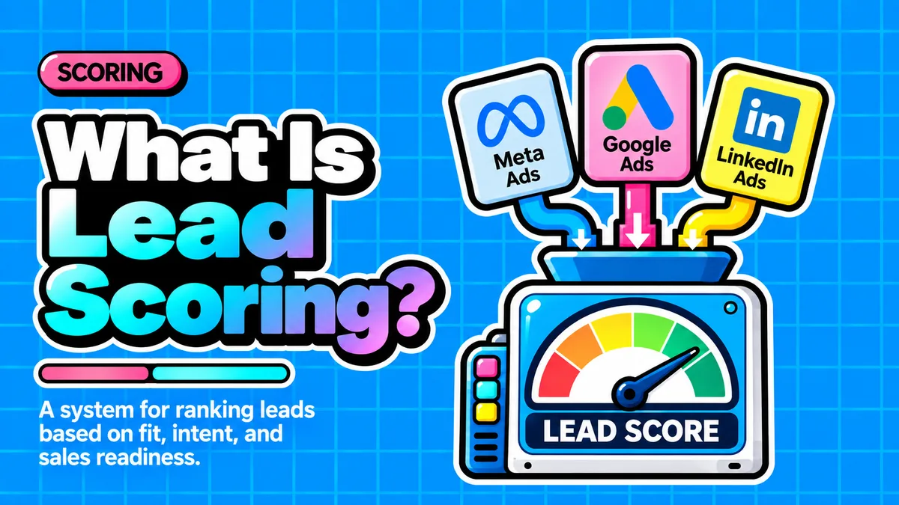

What Is Lead Scoring and How Does It Help Sales Teams Prioritize Leads?

Direct answer: Lead scoring is a methodology that assigns a numerical value to each prospect based on fit and behavior, so sales and marketing teams can objectively rank who is most likely to buy. It turns a chaotic pile of signups, demo requests, and subscribers into a ranked, actionable list, directing limited sales bandwidth toward the people actually ready to buy.
- Lead scoring combines explicit data (company size, job title, industry) with implicit data (website visits, email opens, downloads) into one composite score.
- Points can be added or subtracted, so unsubscribes or inactivity decay a score downward, keeping pipelines from filling with stale contacts.
- A lead becomes sales-qualified once it crosses an agreed threshold; getting that threshold wrong wastes rep time or lets real buyers slip through.
- HubSpot offers manual scoring on Professional and Enterprise tiers and predictive scoring only on Enterprise, making manual the practical starting point for startups.
- Companies that implement lead scoring see 138% ROI on lead generation versus 78% for those that do not, according to Landbase.
Questions this article answers
- What does lead scoring actually mean in plain terms?
- Why does manual lead prioritization break down for startups?
- What are the two types of data behind every lead score?
- How do points get assigned and adjusted in a lead scoring model?
- How does a score turn into a sales handoff?
- How does lead scoring work inside HubSpot?
- What pitfalls should founders watch for when building a scoring model?
- What revenue impact does lead scoring actually have?
- What is the practical first step for a resource-constrained startup?
- Plus 6 FAQs answered below
What does lead scoring actually mean in plain terms?
Lead scoring is the process of assigning a numerical value, typically 1 to 100, to each lead based on how well they fit your ideal customer and how actively they engage, so teams can prioritize instead of guessing.
Rather than relying on gut feeling, a founder or sales rep looks at a number attached to each contact record. That number reflects a composite judgment: how well this person or company fits your ideal customer profile, and how actively they have engaged with your product or content, according to ActiveCampaign.
Lead scoring works by assigning numerical values, typically 1 to 100, to prospect attributes and behaviors, creating a composite score that represents both fit and engagement, per Cognism.
Why does manual lead prioritization break down for startups?
Sales reps at small companies can informally judge leads for a while, but this quickly hits limits once lead volume rises past what a founder or single rep can track by memory.
Many early-stage founders assume lead scoring is an enterprise-only concern. In reality, warning signs appear early: your sales team has more leads than it can respond to in a timely fashion, or reps waste time on low-quality leads that never convert, as noted by Agile CRM.
For a founder-led sales motion where the CEO or a single account executive does outreach personally, this inefficiency is a direct tax on the most scarce resource in the company: founder and early-rep time.
What are the two types of data behind every lead score?
Lead scoring models combine explicit data, information about the prospect like company size or job title, with implicit data, behavioral signals like website visits and email opens.
Explicit data is provided by or about the prospect, such as company size, industry segment, job title, or geographic location, while implicit scores are derived from monitoring prospect behavior, such as website visits, whitepaper downloads, or email opens and clicks, according to Oracle.
Some platforms add a third layer: social scores that analyze a person's presence and activity on social networks, per TechTarget. In practice, the two core dimensions answer different questions:
Company size, industry, job title, location. Answers: is this the right kind of company or person?
Website visits, downloads, email opens and clicks. Answers: are they actually interested right now?
A startup that tracks only one dimension will misfire, mistaking either a disengaged perfect-fit VP or an engaged-but-powerless intern for a sales-ready lead.
How do points get assigned and adjusted in a lead scoring model?
Each action or attribute gets a point value based on how likely it predicts a purchase, and points can also be subtracted when engagement drops, such as after an email unsubscribe.
Each action is assigned a point value depending on how likely the software predicts that action will lead to a purchase, and leads with strong fit and high interest become marketing-qualified leads passed to sales, per Salesforce.
Scoring is not only additive. If a lead unsubscribes from an email list, their score can be adjusted downward. Common signals tracked include:
- Which email messages leads respond to
- Which pages they visit and how long they stay
- Whether they filled out or downloaded a form
- Whether they clicked a blog post or engaged on social media
This negative scoring and decay, described by Creatio, prevents pipelines from filling with contacts who looked promising months ago but have since gone cold.
How does a score turn into a sales handoff?
Once a lead crosses an agreed threshold, it graduates from marketing-qualified to sales-qualified and gets routed for direct outreach, but setting that threshold correctly is critical.
The transition from Marketing Qualified Leads to Sales Qualified Leads is sometimes called the "Valley of Death" in B2B, and if your MQL to SQL conversion rate falls below 10%, your scoring is likely too lenient, according to MarketJoy.
For a two-person go-to-market team, a lenient threshold means reps chase unqualified contacts, while an overly strict one lets real buyers slip through untouched. This is why cross-functional agreement matters more than the scoring math itself: scoring only works if both teams agree on what the scores mean, per ZoomInfo. Jointly defining scoring criteria creates a shared language that reduces finger-pointing over lead quality, even when the marketing team and sales team are the same one or two people.
How does lead scoring work inside HubSpot?
HubSpot offers manual lead scoring, using a customizable HubSpot Score property, and predictive scoring, which uses machine learning; manual is available on Professional and Enterprise tiers, while predictive requires Enterprise.
HubSpot has two lead scoring features: manual and predictive, according to HubSpot's own guide. The manual approach uses a contact property called the HubSpot Score, letting you award or deduct points for specific fields you define. Manual lead scoring is available with the Professional and Enterprise pricing tiers, while predictive only comes with the Enterprise tier, per MarketVeep.
Award or deduct points for the fields you choose. Available on Professional and Enterprise tiers. The practical starting point for startups.
Logistic regression trained on your converted customers, scoring each contact 1 to 100. Enterprise only.
Predictive scoring is built using a logistic regression algorithm that analyzes existing customers and the actions they took before converting, then applies that learning to score current leads, as explained by MadKudu. Once built, the model assigns a score between 1 and 100 to each contact, and a higher score indicates a higher likelihood of becoming a customer.
Configuring the engine involves criteria and weight. There are technical limits worth knowing, per Hublead:
- You can only have 100 active scoring criteria at one time
- Each criterion can be assigned between -250 and 250 points
- Points decay over time, with email actions decaying the fastest
The score itself lives under Settings, Properties, Score, and updates dynamically as contacts interact with your business, according to Insidea.
What pitfalls should founders watch for when building a scoring model?
The biggest traps are treating scoring as set-and-forget, applying one universal score to every contact, and over-engineering a model before you have the data volume to support it.
Regularly review your model at least once a quarter or whenever you introduce a new product, market, or campaign to keep scoring aligned with current goals, per Factors.ai.
A second common trap is HubSpot's universal scoring nature: if you update your lead scoring attributes, all contacts across your HubSpot are updated at once, according to Hightouch. A third trap is over-engineering, attempting an enterprise-grade build before you have the defined ICP or data volume to support it.
Choosing the right complexity for your stage matters: traditional lead scoring is best for startups with low lead volume, while predictive scoring becomes essential for scale-ups with 500-plus leads per month and deep historical data, per Default.
What revenue impact does lead scoring actually have?
Companies implementing lead scoring achieve 138% ROI on lead generation compared to 78% for those without it, and speed of follow-up compounds that advantage further.
Companies implementing lead scoring achieve 138% ROI on lead generation compared to just 78% for those without it, with B2B organizations seeing a 77% increase in lead generation ROI specifically, according to Landbase.
ROI on lead generation for companies that use lead scoring, versus 78% for those that do not.
The scale of the underlying problem is significant: 98% of marketing-qualified leads never convert into closed deals, while only 27% of leads passed from marketing to sales are actually qualified in the first place, per Prospeo.
Scoring is also tied to speed: when a lead hits a threshold score, an automated real-time alert should ping the assigned sales rep immediately, because following up within five minutes increases conversion odds significantly, as noted by The Small Business Expo. For lean teams, every hour spent on an unqualified lead is an hour not spent closing a real deal.
What is the practical first step for a resource-constrained startup?
Start with manual lead scoring in HubSpot before attempting predictive models, defining a small set of explicit and implicit criteria and a single agreed MQL-to-SQL threshold.
The most practical next step for a resource-constrained startup already using HubSpot is to:
- Define five to ten explicit fit criteria (company size, job title, industry)
- Define five to ten implicit engagement criteria (pricing page visits, demo requests, email opens)
- Assign point values inside Settings, Properties, Score
- Set a single MQL-to-SQL threshold that the founder and first sales hire agree on in writing
- Review and recalibrate the model every quarter as real conversion data comes in
Only graduate to HubSpot's predictive scoring in Sales Hub Enterprise once you have enough historical closed-won and closed-lost data to train the model reliably, per Vanderbuild.
Frequently asked questions
What is lead scoring in simple terms?
Lead scoring is a methodology that assigns a numerical value to each prospect based on their fit with your ideal customer and their behavior or engagement, so sales and marketing teams can rank who is most likely to buy.
What is the difference between explicit and implicit lead scoring data?
Explicit data covers information about the prospect such as company size, job title, or industry, while implicit data is derived from behavior like website visits, whitepaper downloads, and email opens and clicks.
Does a startup need lead scoring if the sales team is small?
Yes, small teams can rely on intuition briefly, but that breaks down once leads exceed what a founder or single rep can track, leading to slow responses or wasted time on low-quality leads.
What is the difference between manual and predictive lead scoring in HubSpot?
Manual lead scoring lets you define and assign point values to specific fields and is available on Professional and Enterprise tiers, while predictive scoring uses machine learning to score leads automatically and is only available on the Enterprise tier.
How often should a lead scoring model be reviewed?
Lead scoring models should be reviewed at least once a quarter, or whenever a company introduces a new product, market, or campaign, to keep scoring aligned with current goals.
What ROI impact does lead scoring have on lead generation?
Companies implementing lead scoring achieve 138% ROI on lead generation compared to 78% for companies without it, with B2B organizations specifically seeing a 77% increase in lead generation ROI.
Sources
- Agile CRM: Lead Scoring
- ActiveCampaign: Lead Scoring 101
- Oracle: What Is Lead Scoring
- TechTarget: Lead Scoring Definition
- Salesforce: Lead Scoring
- Wikipedia: Lead Scoring
- Creatio: Lead Scoring Glossary
- Cognism: Lead Scoring
- HubSpot Blog: Lead Scoring Instructions
- ZoomInfo: Lead Scoring
- MadKudu: Predictive Lead Scoring in HubSpot
- Default: HubSpot Lead Scoring
- MarketVeep: Ultimate Guide to Lead Scoring in HubSpot
- Hublead: HubSpot Lead Scoring
- HubSpot: Lead Scoring Product Page
- Hightouch: Lead Scoring and Account Scoring in HubSpot
- Factors.ai: HubSpot Lead Scoring
- Insidea: Complete Guide to the HubSpot Lead Scoring Tool
- Landbase: Lead Scoring Statistics
- Prospeo: B2B Lead Conversion Rates
- The Small Business Expo: B2B Lead Scoring
- MarketJoy: B2B Sales Pipeline Conversion Rates
- Vanderbuild: What Is B2B Lead Scoring
Want lead scoring built into your own HubSpot?
Contact →